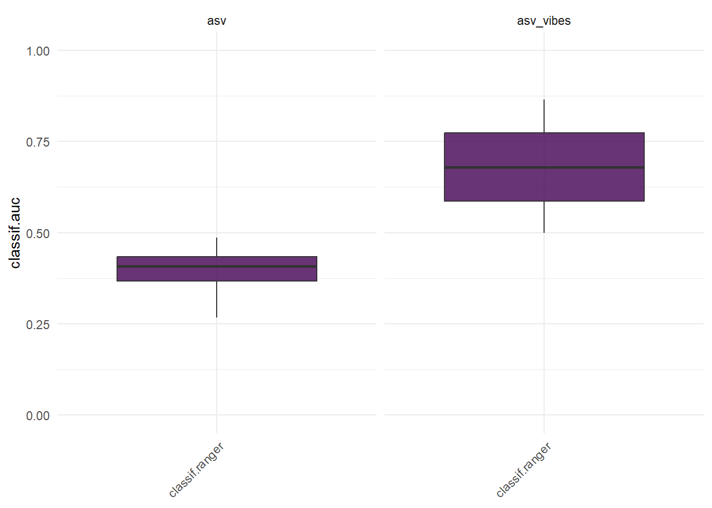

VIBES Use Case
This code demonstrates a workflow to take advange of VIBES funcionality to go further in our microbiome analysis. VIBES output will be used for a Machine Learning classification task, in this case to predict the response to treatment. We used PRJNA302078 included in VIBES to run the analysis. The downstream analysis based on ML will be performed with mlr3 package. In summary, the code processes microbiome data, applies dimensionality reduction, and performs classification using the classif.ranger learner. It also includes benchmarking and visualization of classification performance.
require(VIBES)
require(ggplot2)
require(PCAtools)
require(phyloseq)
require(dplyr)
require(microbiome)
require(mlr3)
require(mlr3learners)
require(mlr3benchmark)
require(mlr3viz)
Data
- The microbiome data is obtained from the
PRJNA302078dataset. - The code performs preprocessing on the data, focusing on the taxonomic rank Species.
- In order to predict treatment response based on pre-treatment data, we format the sample_data and keep only those samples at baseline.
# get data and preprocess
data("PRJNA302078")
pseq = tax_glom(PRJNA302078, taxrank = "Species")
pseq@sam_data$visits = as.numeric(sapply(strsplit(pseq@sam_data$sample_alias, "D"), "[", 2))
pseq = subset_samples(pseq, visits==0)
Data Transformation
- The code uses Principal Component Analysis (PCA) to reduce the dimensionality of the microbiome data.
- We used
VIBESto extract the probabilities of belonging to each cluster. These variables will be used later as predictive variables.
# Calculate VIBES
vibes <- get_VIBES(object = pseq, column = 7)
otus <- t(vibes@otu_table@.Data)
# otus data
otus_d <- data.frame(
microbiome::transform(otus, 'clr'),
status = vibes@sam_data$status)
# get pca
pca <- PCAtools::pca(mat = otus_d %>% select(-c(status)) %>% t())
otus_pca <- pca$rotated[, 1:3] %>% mutate(status = as.factor(otus_d$status))
# vibes data
vibes_d <- data.frame(
VCS.I = vibes@sam_data$VCS.I,
VCS.I = vibes@sam_data$VCS.II,
VCS.I = vibes@sam_data$VCS.III,
VCS.I = vibes@sam_data$VCS.IV,
status = vibes@sam_data$status
)
# otus + vibes
otus_vibes <- data.frame(
otus_pca,
vibes_d %>% select(-c(status))
)
Machine Learning prediction
- Two classification tasks are defined:
otus_taskuses PCA-transformed microbiome data to predict the status variable with a positive class of Cured.otus_vibes_taskcombines the PCA-transformed microbiome data withVIBESfeatures to predict the status variable with a positive class of Cured.- The code uses the
classif.rangerlearner for classification tasks, configured to predict probabilities. - Cross-validation with 4 folds due to limited sample size is employed as the outer resampling strategy.
- It runs the benchmark, evaluating the classification performance of the learner.
- The results are visualized using the area under the curve (AUC) measure.
# Machine Learning
otus_task <- TaskClassif$new(id = "asv",
backend = otus_pca,
target = "status",
positive = "Cured")
otus_vibes_task <- TaskClassif$new(id = "asv_vibes",
backend = otus_vibes,
target = "status",
positive = "Cured")
tasks <- list(otus_task, otus_vibes_task)
# Make learner
learner <- lrn("classif.ranger", predict_type = "prob")
# outer resampling
set.seed(12345)
outer <- rsmp("cv", folds = 4)
# Run benchmark
design = benchmark_grid(tasks, learner, outer)
bmr = benchmark(design)
# Plotting
autoplot(bmr, measure = msr("classif.auc")) + ylim(c(0,1))

We can see how the inclusion of VIBES features outperform the prediction task.